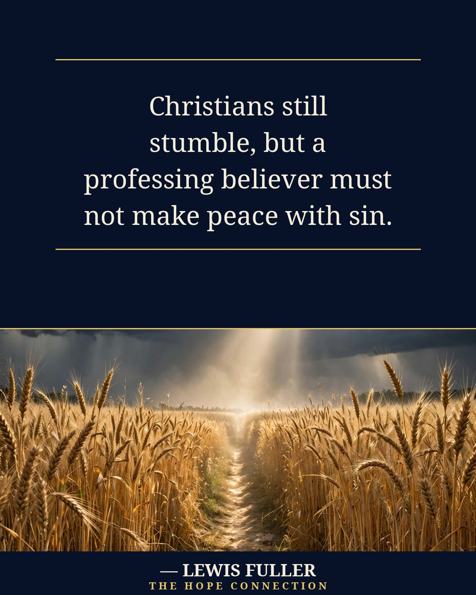

Christians still stumble, but a professing believer must not make peace with sin. Genuine faith produces repentance and good works, not as a way to earn salvation, but as its fruit (Ephesians 2:8–10; James 2:17). Salvation is by grace alone through faith alone in Christ alone; even repentance and faith are gifts God grants.
Stumbling isn't the end of the story — settling is. Grace doesn't make peace with what nailed Jesus to the cross; it breaks the truce and leads us home.
The Story in the Story
The picture preaches the same sermon. The path isn't a highway — it's a footpath, narrow and single-file, and a footpath only stays a path by being walked. Grass grows over a path nobody uses. A man at peace with sin hasn't lost the path; he's lying down beside it.
The path runs through a ripe wheat field, not around it. The believer's road goes through the middle of the world he lives in — his town, his past, the people who knew him when. Nobody gets airlifted out of the field. You walk through it, daily.
The storm over the field is breaking, not gone. Dark still hangs at the edges, and rain still falls in the distance. Grace doesn't pretend the storm is over — it gives light inside it: one shaft of light falling on the path ahead. 'Thy word is a lamp unto my feet, and a light unto my path' (Psalm 119:105). A lamp, not a floodlight — enough light for the next step, and then the next.
And the path runs one way: toward the light. That is the difference the quote names. A stumbling believer and a settled one are not separated by whether they fall, but by which way they are facing when they get up.
Christ Proclaimed. Jesus is Lord.
— Lewis Fuller, The Hope Connection